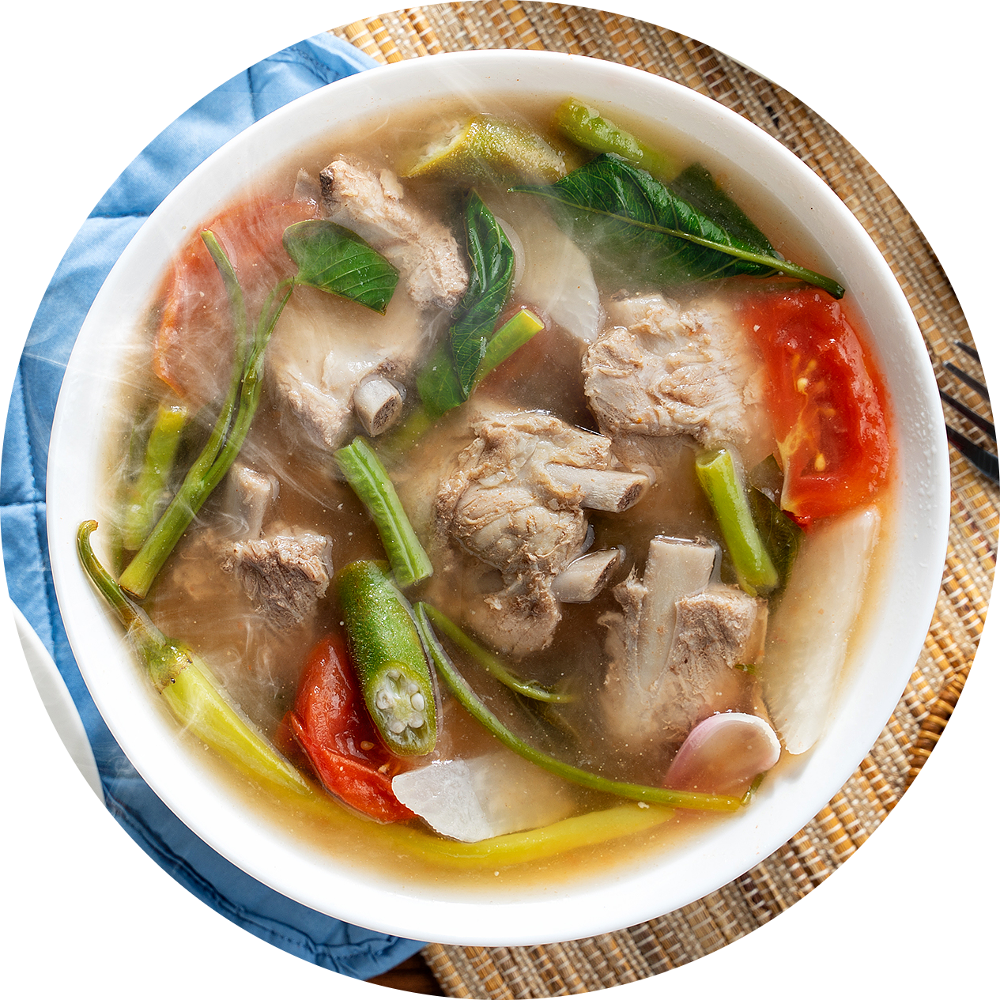

|  | SinigangTraditional Filipino Soup Dish I am a bowl of Sinigang. |
Sinigang means "stewed [dish]", it is a nominalized form of the Tagalog verb sigang, "to stew". While present nationwide, sinigang is seen to be culturally Tagalog in origin, thus the similar sour stews and soups found in the Visayas and Mindanao (like linarang) are regarded as different dishes and differ in the ingredients used. Fish sauce is a common condiment for the stew.
| Umami | ★★★★☆ |
| Sour | ★★★★★ |
| Sweet | ★☆☆☆☆ |
| Salty | ★★★☆☆ |
| Bitter | ☆☆☆☆☆ |